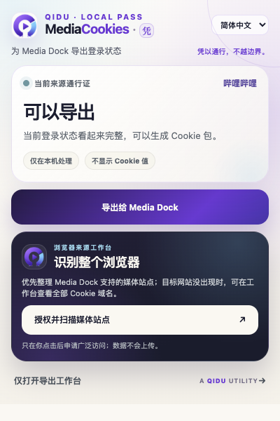
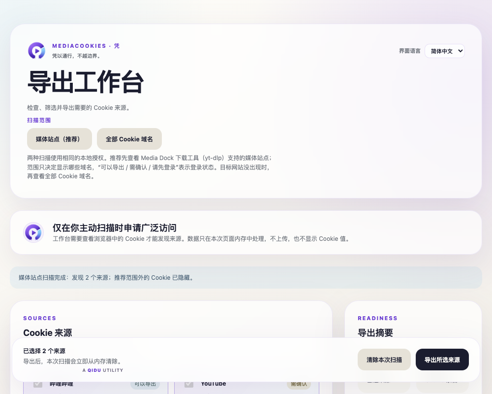
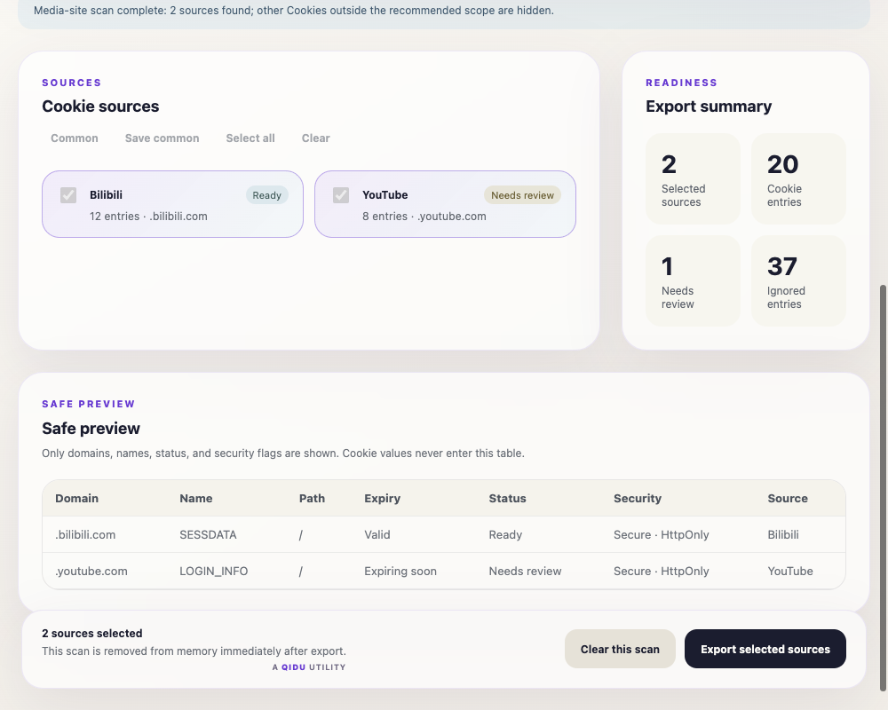
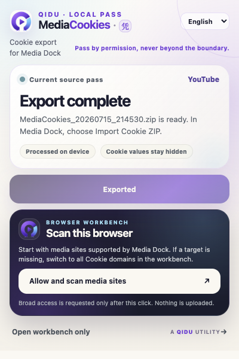
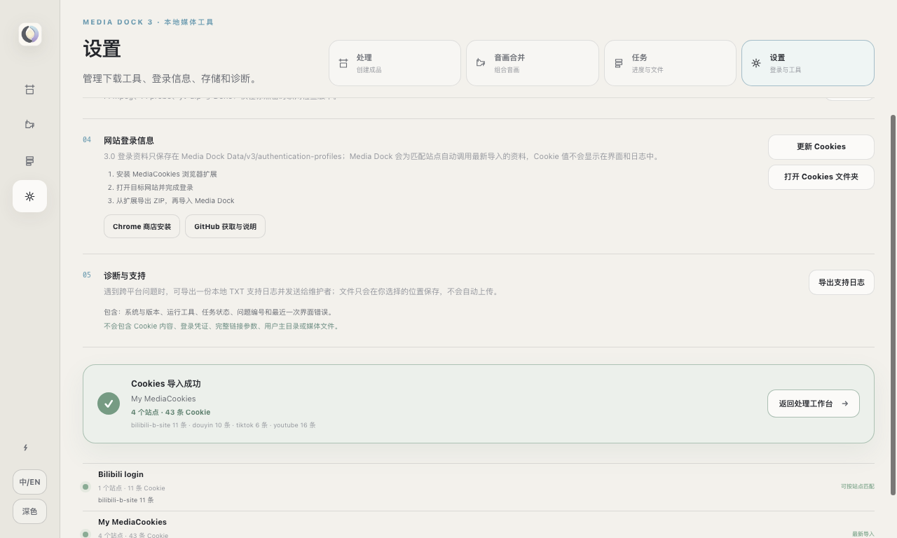

01 QUICK PASS
MediaCookies · 凭
为 Media Dock 导出登录状态。Media Dock 用户只需打开目标媒体页，再让本地通行证完成交接。
凭以通行，不越边界。
LOCAL ONLYNO COOKIE VALUES
PRODUCTION EXTENSION · OPERA NEON

打开目标媒体页，MediaCookies 只处理当前任务需要的登录状态。
02 PERMISSION
授权发生在点击之后
权限不是默认铺开的后台能力，而是一道用户主动跨过的门槛。
1识别当前媒体来源
2点击后申请需要的访问
3数据只留在本机
OPTIONAL HOST ACCESS · ON DEMAND
主动授权媒体站点扫描；不授权，就不会读取浏览器中的其他来源。
READINESS ≠ SCAN SCOPE

可以导出
需确认
请先登录
03 READINESS
状态先说清，下一步自然就懂
“扫描哪些域名”与“当前登录能否导出”是两件事。界面把它们分开表达。
不显示 Cookie 值
可以导出、需确认、请先登录：描述登录状态，不描述扫描范围。
ADVANCED FLOW · OPENED BY CHOICE

04 WORKBENCH
专业能力收进工作台
Media Dock 用户先用快速导出；熟悉 Cookie、yt-dlp 与诊断流程的用户，再进入完整工作台。
SOURCESREADINESSSAFE PREVIEW
需要诊断时再展开专业能力；快速导出仍然保持简单。
05 SCAN SCOPE
先看媒体站点，缺少时再看全部域名
两种扫描使用同一份本地授权，差别只在于工作台显示哪些来源。
范围决定显示什么状态说明能否导出
REAL WORKBENCH · SCAN SCOPE

推荐范围更聚焦；全部域名用于找遗漏来源，不代表它们更有效。
SAFE PREVIEW · SYNTHETIC METADATA

06 SAFE PREVIEW
诊断信息有用，秘密本身保持隐藏
可以查看域名、名称、有效期、状态与安全标记；Cookie 值永远不会进入表格。
DOMAINSTATUSSECURITY
NO COOKIE VALUES
安全预览只展示元数据，不展示 Cookie 值。
07 LOCAL EXPORT
生成带时间的Cookie 包
文件名清楚可追溯；导出完成后，本次扫描会从页面内存中清除。
LOCAL PACKAGE · 2026-07-15 21:45:30
MediaCookies_2026-07-15_21-45-30.zip
NO UPLOADCLEARED AFTER EXPORT
EXPORT RECEIPT

导出完成：时间戳 Cookie 包留在本机，等待 Media Dock 导入。
MEDIA DOCK · SYNTHETIC IMPORT STATE


LOCAL COOKIE PACKAGE

08 LOCAL HANDOFF
 MediaCookies · 凭
MediaCookies · 凭交给 Media Dock，边界仍然留在本机
凭以通行，不越边界。
Pass by permission, never beyond the boundary.
A QIDU UTILITY
本地交接路径：MediaCookies 与 Media Dock 各守其职。